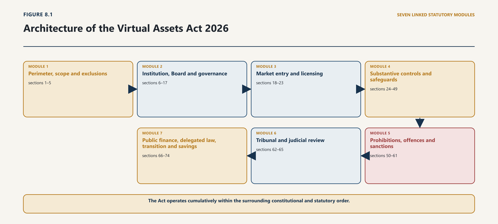
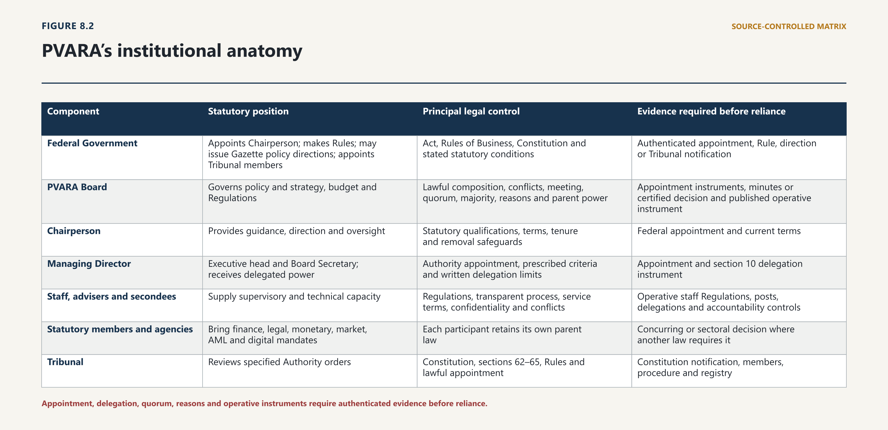
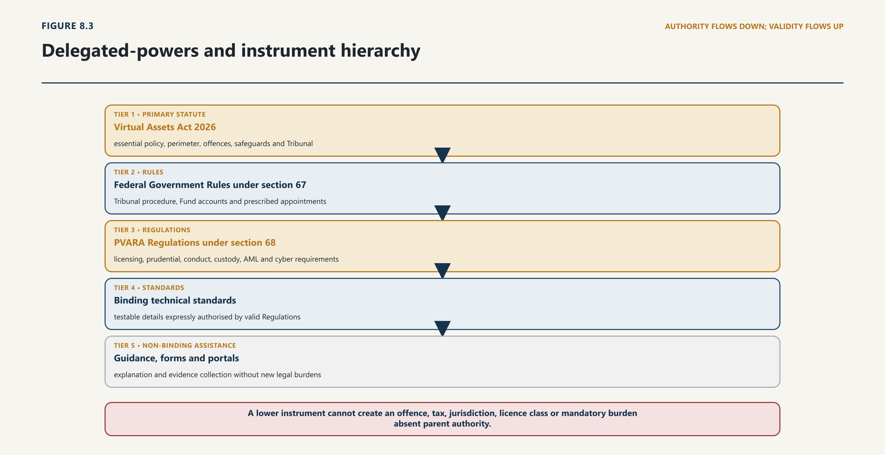

Chapter Eight · Part 2
THE VIRTUAL ASSETS ACT 2026 AND PVARA
The Future of Digital Assets in Pakistan
8.1 Status, Object and Constitutional Setting
8.1.1 Primary legislation, commencement and legal force
1
The Virtual Assets Act 2026 is the controlling federal statute for Pakistan’s dedicated virtual-asset regime. It received presidential assent on 4 March 2026, was published in the Gazette of Pakistan, Extraordinary, Part I, on 5 March 2026 as Act XIII of 2026, extends to the whole of Pakistan and came into force at once.1 Its immediate legal effect must be separated from the operational completion of the system it creates. Parliament enacted the perimeter, institution, principal duties, prohibitions, offences and powers. It left many entry criteria, prudential details, technical controls, procedures and monetary thresholds to later Rules or Regulations. Commencement therefore establishes legal authority and exposure; it does not prove that every licence, tribunal, reporting interface or supervisory process was available on the same day.
8.1.2 Statutory object and relationship with existing law
2
The Act pursues several objects at once: licensing and supervision of virtual-asset services and issuers; customer protection, transparency and market integrity; prudential, cyber and data controls; AML/CFT/CPF compliance; innovation and financial inclusion; and development of blockchain and distributed-ledger technology. That combination makes PVARA more than a licensing office, but less than an all-purpose sovereign for digital value. Monetary, payment, securities, company, foreign-exchange, tax, data, criminal, energy, property and provincial laws continue to govern the legal substance allocated to them. Section 5 confirms this cumulative order, preserves the priority of the Foreign Exchange Regulation Act 1947, and recognises the superior operation of applicable data, data-governance, cybersecurity, financial-secrecy and cross-border personal-data measures.2
3
The most useful way to read the Act is as an architecture of connected legal modules, not as a self-sufficient code.

4
The authority-and-completion inquiry produces a qualified result at the threshold. The legal actor and parent statute are identifiable; the Act states its central purposes and much essential policy. Qualification arises because legal effect repeatedly depends on another actor, instrument, appointment, publication step or adjacent statute. The proper question for every later chapter is therefore not simply “what does the Act say?” but “which provision acts directly, which requires completion, which institution owns that completion, and which other law remains controlling?”
8.2 Definitions, Scope and Territorial Reach
8.2.1 Virtual assets, VASPs and exclusions
5
The definition of “Virtual Asset” in section 3 is functional: a digital representation of value that may be digitally traded or transferred and may be used for payment or investment. It expressly says that virtual assets are not legal tender. That negative rule matters, but it does not resolve whether a product is electronic money, a payment instrument, a security, a derivative, a deposit, foreign exchange, property or a contractual claim under another law. Legal tender status, consensual acceptance and sectoral classification are different questions. A private token does not become sovereign money because it tracks a currency, and it does not escape payment or banking law merely because it is not legal tender.
6
The Act’s exclusions are designed to protect this functional boundary. A closed-ecosystem token is excluded only if the cumulative statutory conditions are satisfied, including restricted transferability, no fiat exchange or real-world redemption, no external trading and no interoperability with other virtual assets. A label such as “loyalty point” is insufficient if the architecture and economic use exceed those conditions. The NFT exclusion is similarly limited to a token that is non-financial or functional in character. Fractionalisation, payment functionality, a pooled return or reference to regulated assets may return the arrangement to the Act or another financial statute.
7
Section 2 also excludes traditional financial instruments within SBP or SECP jurisdiction and central-bank digital representations of fiat. Yet section 3’s virtual-asset definition excepts securities and other regulated financial assets from its exclusion where they are represented, issued or transferred using DLT; the definition of an asset-referenced token is wide enough to represent ownership rights, claims or economic benefits; and section 32 permits reference to real estate, securities, financial assets, commodities and currencies. Read literally and separately, those provisions can pull a tokenised security out of and back into the PVARA perimeter.
8
The sound construction is substance over technological form. A security, derivative, payment instrument, bank-like claim or foreign-exchange transaction remains subject to its sectoral law notwithstanding the token wrapper. PVARA regulates the genuinely additional virtual-asset layer—custody, key control, on-chain transfer, reserve verification, platform conduct and other risks assigned by the Act—through the coordination contemplated by sections 5 and 9. “Primarily” vested authority in section 5(3) is not an eraser of the legislation governing the underlying asset, claim or transaction.3
9
This construction does not eliminate all uncertainty. The Act permits PVARA to exclude other representations and permits the Federal Government to notify another virtual-asset service for later inclusion in Schedule I. Classification decisions may therefore change the regulated perimeter. To satisfy legality, a perimeter instrument should identify its parent power, objective criteria, consultation with the regulator whose mandate is implicated, reasons, effective date, treatment of existing arrangements and route of review. A website category or application-form label cannot perform the work of a properly authorised generally applicable rule.
8.2.2 Offshore conduct, effects and cross-border services
10
Section 2 applies the Act to a VASP carrying on, or holding itself out as carrying on, a virtual-asset service “in or from Pakistan”, and to an issuer offering, originating or distributing a virtual asset on its own behalf “in or from Pakistan”. Section 4 adds extraterritorial ambition to the fullest extent permitted by law and anticipates cooperation arrangements. Crucially, it leaves to Regulations the test for when an offshore service is deemed offered or marketed to persons in Pakistan. The statute therefore establishes a Pakistan-facing nexus, but does not itself complete the targeting criteria, service-of-process rules, foreign-evidence route or practical enforcement leverage for every offshore platform.
11
Territorial reach must be decomposed in the same way. The Act can regulate conduct in or from Pakistan and define when foreign marketing is sufficiently connected. It cannot unilaterally create foreign personal jurisdiction, compel evidence held abroad, perfect a freeze against property under foreign law or ensure recognition of a Pakistani order. Regulator-to-regulator cooperation can support supervision, but coercive criminal evidence and enforcement may require mutual legal assistance, judicial process and the law of the foreign state. Section 61’s access-prevention power supplies domestic leverage against online availability; it is not equivalent to jurisdiction over the foreign operator or recovery of customer assets.
12
On that analysis, the asset and activity definitions are qualified: they are substantially stated but contain a technology-versus-substance tension that requires coordinated construction and, preferably, amendment. Offshore reach is qualified and implementation-dependent. The Act states ambition and some domestic tools, but the offering test, international process and practical recoverability remain separate legal tasks.
8.3 PVARA’s Constitution and Governance
8.3.1 Composition, appointments and delegation
13
Sections 6–8 establish PVARA as an autonomous body corporate with perpetual succession, a common seal, capacity to contract and litigate, and headquarters in Islamabad. Institutional autonomy here means statutory personality and decision-making space within the Act. It does not free PVARA from the Constitution, federal public-finance law, the Rules of Business, audit, judicial review or the limits of its parent powers.
14
The Authority is governed through a mixed Board. It comprises a federally appointed Chairperson; the Secretaries of Finance and Law and Justice; the Governor of SBP; the Chairpersons of SECP, the National AML/CFT Authority and the Pakistan Digital Authority; and two prescribed independent directors with relevant expertise. This composition embeds monetary, market, fiscal, legal, AML and national-digital perspectives in the regulator itself. It is a coordination design, not a merger of mandates. An SBP Governor’s presence does not make every PVARA decision an SBP authorisation, just as a PVARA decision does not bind SECP within a distinct statutory jurisdiction unless the relevant law and decision-making process permit it.
15
Non-ex officio members serve three-year terms and may be reappointed once. The Authority sets policy and strategy, approves its budget and makes Regulations. It must meet at least twice a year. The quorum is fifty per cent of total membership, but the Chairperson, Finance Secretary and SBP Governor must be present; decisions are by a majority of members present. These rules make lawful composition, appointment, notice, quorum, conflicts and the decision record material to every Board act. A public announcement attributed to “PVARA” does not prove that the Board validly exercised a power reserved to it.
16
Sections 11 and 12 separate the Chairperson and Managing Director. The Federal Government appoints the Chairperson, whose statutory qualifications are expressed at a high level and whose premature removal requires gross misconduct or incapacity, notice and hearing. The Authority appoints the Managing Director for a three-year term, extendable within the statutory maximum; the MD is Secretary to the Authority and ordinarily has no vote. Section 13 authorises staff, consultants and secondees through Regulations and prescribed processes.4

| Component | Statutory position | Principal legal control | Evidence required before reliance |
|---|---|---|---|
| Federal Government | Appoints Chairperson; makes Rules; may issue Gazette policy directions; appoints Tribunal members | Act, Rules of Business, Constitution and stated statutory conditions | Authenticated appointment, Rule, direction or Tribunal notification |
| PVARA Board | Governs policy and strategy, budget and Regulations | Lawful composition, conflicts, meeting, quorum, majority, reasons and parent power | Appointment instruments, minutes or certified decision and published operative instrument |
| Chairperson | Provides guidance, direction and oversight | Statutory qualifications, terms, tenure and removal safeguards | Federal appointment and current terms |
| Managing Director | Executive head and Board Secretary; receives delegated power | Authority appointment, prescribed criteria and written delegation limits | Appointment and section 10 delegation instrument |
| Staff, advisers and secondees | Supply supervisory and technical capacity | Regulations, transparent process, service terms, confidentiality and conflicts | Operative staff Regulations, posts, delegations and accountability controls |
| Statutory members and agencies | Bring finance, legal, monetary, market, AML and digital mandates | Each participant retains its own parent law | Concurring or sectoral decision where another law requires it |
| Tribunal | Reviews specified Authority orders | Constitution, sections 62–65, Rules and lawful appointment | Constitution notification, members, procedure and registry |
17
Source: synthesis of the Virtual Assets Act 2026 and the institutional evidence reviewed in this chapter.
8.3.2 Independence, accountability and conflicts
18
The official materials reviewed to the cut-off show a functioning website, NOC applications, a public consultation, an advisory, procurement activity and public references to a Chairperson. Those materials support a finding of operational activity. They do not substitute for the Gazette or authenticated appointment, delegation, staff-Regulation and Board records needed to validate a particular exercise of statutory power. No complete public register of those institutional instruments was located in the reviewed official pages. This is a bounded evidence finding, not a conclusion that no instrument exists.5
19
Section 10 creates a significant governance risk by allowing the Authority to delegate “any” power or function to the Managing Director subject to such conditions and limitations as it considers appropriate. The Act does not expressly reserve Regulation-making, budget approval, final licensing sanctions or other core Board functions. The provision should be read consistently with the statutory design: powers assigned to collective governance, essential policy or final coercive judgment should not migrate by a general unpublished delegation. At minimum, every delegation should be written, specific, published where it affects the public, time-bounded where appropriate, and identify subdelegation, reporting and revocation.
20
The institutional result is qualified. Parliament created a recognisable Authority and a coordination-rich Board. Capability, lawful appointment and valid delegation must still be proved for the decision in issue. Power on paper is not institutional capacity, and operational activity is not documentary proof of every statutory precondition.
8.4 Functions, Policy and Inter-Agency Interfaces
8.4.1 Regulation, supervision and public coordination
21
Section 9 gives PVARA an unusually broad portfolio. It must license, regulate and supervise VASPs and issuers; protect customers and market integrity; impose prudential, conduct, AML, cyber and data controls; promote responsible innovation, investment and inclusion; govern the adoption of blockchain and DLT; classify virtual assets functionally in consultation with SBP or SECP where their mandates are implicated; coordinate on AML/CFT/CPF; advise the Federal Government; and undertake incidental action. It may demand information, inspect, license, sanction, operate a sandbox, charge prescribed fees and use several classes of regulatory instrument.6
22
The breadth creates a permanent need to distinguish regulatory ownership from regulatory participation. PVARA owns the virtual-asset functions Parliament assigned to it. SBP retains its powers over currency, banking, payments and foreign exchange; SECP retains securities, derivatives, company and capital-market powers; FMU and the AML architecture retain protected reporting and analytical roles; FIA, NCCIA and courts retain powers under their laws; FBR retains tax administration; PDA retains national digital-planning and data-governance functions within the Digital Nation Pakistan Act; and provincial bodies may retain consumer, services, electricity, environment or property functions. Board membership and consultation help connect these powers but do not silently transfer them.
23
Section 17 requires information sharing with identified public institutions and allows arrangements with foreign counterparts, the latter subject to prior Federal Government approval. Information sharing is itself a public act. A lawful protocol should specify the initiating power, categories and purpose, confidentiality, protected information, security, access, retention, correction, onward disclosure, evidential use and audit. Section 17 cannot be read as a general override of tax secrecy, STR confidentiality, warrant requirements, data protections or the recipient’s statutory limits.
24
Sections 9 and 36 give PVARA a role in blockchain standards and national adoption. Section 71 permits the Federal Government to issue Gazette-notified policy directions consistent with the Act and the national policy framework, while prohibiting impairment of PVARA’s operational autonomy. The hierarchy is therefore clear in principle. Government may state lawful national policy; PVARA determines regulatory matters within the Act; PDA integrates national digital planning; sector regulators decide within their statutes. A ministerial announcement, inter-agency meeting or memorandum may initiate coordination but cannot replace a Rule, Regulation, Board decision, sectoral approval or Commission-approved Masterplan component required by law.
8.4.2 SBP, SECP, FMU, FBR and other authorities
25
The minimum interface instrument should allocate the classified product or function; nominate the lead and concurring regulators; identify every required licence or permission; determine the controlling disclosure and customer-asset regime; sequence applications and inspections; govern data exchange; allocate emergency action and public communication; prevent duplicate sanctions; establish disagreement and escalation routes; and state review and expiry. For tokenised securities and fiat-referenced tokens, this should be a legal gateway rather than informal case-by-case tolerance.
26
Classification also needs an administratively fair procedure. An applicant should be able to obtain a reasoned determination before committing capital, identify the facts and legal characteristics on which it depends, and seek reconsideration if the product changes. Any no-action or sandbox relief should identify its statutory basis, protected persons, conditions, duration and customer consequences. It should not bind another regulator that has not lawfully concurred, and it should not become an unpublished precedent available only to well-connected firms.
27
The institutional-boundary inquiry is satisfied in direction but qualified in execution. The Act repeatedly recognises coordination and contains cross-membership. It does not supply the detailed allocation instrument for overlapping products, nor can PVARA’s development mandate be treated as authority to decide questions legally reserved to another institution.
8.5 Licensing and Supervisory Architecture
8.5.1 Entity status, permitted activities and continuing obligations
28
Section 18 and Schedule I define ten regulated service categories: advisory; broker-dealer; custody and administration; exchange; lending and borrowing; derivatives; management and investment; transfer and settlement; issuance services; and mining-related services involving customer assets or funds. The Schedule excludes specified own-account activity, genuinely self-hosted software provision and pure own-account mining. Functional activity controls. “Exchange”, “wallet”, “protocol”, “AI adviser”, “miner” or “technology company” is not a statutory safe harbour if the person professionally performs a scheduled service for another.
29
The intended entry sequence has two stages. Under section 19, a person proposing to incorporate a company whose primary object is virtual-asset services first applies to PVARA for an NOC. After incorporation, it applies for a licence with the prescribed information. Section 20 applies continuing fit-and-proper requirements to controllers, sponsors, directors, chief executives and other key persons and requires a Pakistan office and resident decision-maker. Section 21 permits a full, provisional or limited-scope licence, requires written reasons for refusal and a public register. Sections 22 and 23 impose ongoing capital, reporting, compliance, cyber, data and change-control obligations and govern variation, suspension and revocation. Section 50 then prohibits a person from providing or holding itself out as providing a virtual-asset service by way of business unless it is an incorporated company and holds a valid licence.7
30
This is a coherent statutory skeleton. The notified Pakistan Virtual Asset Regulatory Authority Regulations 2026 and notified activity-specific Regulations now supply the delegated application framework. Notification must still be distinguished from implementation: operative forms, filing channels, public registers, decisions on particular applications and authenticated consolidated texts must be established from the final instruments and official records. The earlier consultation closed on 2 July 2026 and remains relevant only as legislative history.8
31
That history produces a critical status distinction. An NOC is preliminary permission for AML registration and local incorporation under the NOC instrument; it is not the statutory licence required by sections 21 and 50. A public statement that an exchange has received an NOC must not be reported as a licence. Current duties must be derived from the Act and notified final Regulations, not from superseded consultation wording. Existing providers may rely on section 70 only if its conditions are met; entrants need the lawful route prescribed by the Act and final Regulations.
8.5.2 Inspection, information and risk-based supervision
32
The strongest supervisory provisions operate directly at a high level. Customer assets must be segregated and excluded from the licensee’s insolvency estate; the licensee owes a statutory fiduciary duty; rehypothecation requires explicit, informed and revocable written consent; and custody, proof-of-reserves and reserve-custodian controls follow in sections 24–29. Sections 30–33 impose primary rules for offerings, fiat-referenced tokens, asset-referenced tokens and significant issuers. Sections 34–49 address cyber resilience, sandboxing, mining, data, fair dealing, disclosures, conflicts, complaints, AML/CFT/CPF, the Travel Rule and privacy. Most modules also confer detailed Regulation-making power.9
33
The architecture is statutorily established and its delegated baseline has been notified. PVARA and the Federal Government must now maintain the authorised instrument stack in authenticated, consolidated and legally reliable form, align implementation with the transition, and maintain a register that distinguishes NOC, application, provisional licence, full licence, permitted services, conditions, suspension, revocation and wind-down.
8.6 Rules, Regulations, Standards and Directions
8.6.1 Federal Rules and PVARA Regulations
34
The Act creates several instrument classes whose legal force cannot be assumed to be equal. Section 67 empowers the Federal Government to make Rules by notification in the official Gazette for carrying out the Act’s purposes and implementation. Section 68 empowers PVARA, in consultation with the concerned Division, to make Regulations for carrying out the Act’s purposes. Unlike section 67, section 68 does not expressly state a Gazette-publication requirement. Section 9(2)(a) additionally lists Regulations, standards, directives, guidelines, handbooks, circulars and “any other instruments” necessary for implementation.10
35
These provisions must be read through legality, essential-policy and publication principles. A Rule or Regulation may complete technical and administrative detail within the Act. A generally applicable instrument that changes market entry, prescribes a mandatory condition or supplies the element of a sanction requires a clear parent power, the authorised maker, required consultation or approval, publication, commencement and consistency with primary law. Guidance and handbooks may explain, illustrate or organise compliance. They cannot create an offence, invent an issuer licence omitted from the Act, widen a statutory service category or impose a general mandatory burden merely because section 9 lists them.

8.6.2 Hierarchy, publication, consultation and legal effect
36
The section 68 omission is not a sound reason to keep Regulations inaccessible or enforce them through private circulation. The omission creates a contestable publication-validity risk, not an automatic conclusion that every regulation is void. Primary amendment should state the required Gazette publication, authentication and commencement rule expressly so that legal effect does not depend on litigation over implication. A legislative instrument affecting rights, entry, duties and sanctions must be officially made, authenticated, published and assigned a reliable effective date. The earlier consultation draft contemplated Gazette notification and distinguished generally applicable Regulations from individual directions. The final notified text alone determines which of those proposals became law.11
37
The breadth of delegation is uneven. Parliament itself defines the regulated service concept, establishes licensing, protects customer assets, prohibits unlicensed business and sets criminal penalties. Expert detail can legitimately be delegated for capital, custody, cybersecurity, reporting and technical interoperability. Greater difficulty arises where the Act leaves an essential element of penal or coercive exposure to the delegate. Section 59(1)(c) speaks of a maximum administrative penalty prescribed by Rules, while section 59(4) states a separate ceiling of twenty-five million rupees. A clear core maximum and criteria should be in the Act. Section 43 prohibits marketing unless an issuer holds a licence or registration under the Act, but the Act does not clearly enact the complete principal-issuer registration route. Regulations may administer that status; they should not manufacture an offence-triggering licence architecture from silence. Section 59(3), allowing PVARA action for breach of “any other law of Pakistan”, also needs a limiting nexus and reliance on the competent authority’s finding.
38
Similarly, section 18 permits the Federal Government to notify another service and says it shall subsequently be included in Schedule I. The provision should identify whether notification itself alters the Schedule, whether later primary amendment is intended, and what transition protects existing activity. Section 53’s default prohibition of inadequately collateralised algorithmic tokens is primary policy; the power to permit a bounded product through Regulations should remain tied to the safeguards and statutory object, not become a power to reverse the prohibition generally.
39
An operative-instrument register is therefore indispensable. For every item it should state title, maker, parent provision, decision date, consultation, Gazette or official publication reference, commencement, amendment history, current consolidated text, persons affected, binding or explanatory status, machine-readable version, superseded versions and challenge route. The register should separately identify Board delegations, policy directions, licence forms, technical schemas and emergency orders. A web page may host the register; the page is not itself the source of legal authority.
40
The instrument-hierarchy inquiry identifies discrete failures. The Act authorises ordinary delegated detail, but its instrument taxonomy is overbroad, section 68 lacks an express Gazette formula, and several provisions risk leaving essential policy or sanction exposure to subordinate law. The immediate correction is disciplined publication and construction. The durable correction is amendment: reserve core Board and penal matters, enact a complete issuer route, reconcile section 59 and state the legal effect and publication requirements for every generally applicable instrument.
8.7 Investigation, Enforcement and Sanctions
8.7.1 Powers, offences, penalties and procedural safeguards
41
Sections 50–53 state four central prohibitions: unlicensed virtual-asset services; unlawful initial offerings; market manipulation and insider trading; and primarily algorithmic, inadequately collateralised value-maintenance tokens unless specifically permitted under authorised safeguards. Sections 54–58 then create criminal offences, corporate-officer exposure, investigation and prosecution arrangements, special courts and public prosecutors. Sections 59–61 add administrative sanctions, emergency intervention and broad access-prevention powers.12
42
The Act distinguishes criminal and administrative routes, but the boundary needs care. Section 56 makes an authorised PVARA officer the investigator for an offence under the Act. That exclusivity should be confined to the VAA charge. It cannot disable FIA, NCCIA, police, FMU-linked agencies, tax authorities or another regulator from investigating a distinct offence within their own law arising from the same facts. Parallel authority requires a lead-agency, referral, evidence-sharing and sequencing protocol so that neither gaps nor prejudicial duplication become the default.
43
Section 57 generally requires a court warrant for search and seizure and then gives the authorised officer substantial police powers, including arrest, attachment and confiscation language. Section 61 permits directions to intermediaries, hosts, app stores, search engines, advertising networks, registrars, payment providers and facilitators to prevent access to unlicensed services or connected material. Written reasons, communication and a representation process are important safeguards. They do not resolve every question about intermediary jurisdiction, technical over-blocking, preservation of evidence, affected-customer access or overlap with the specialist online-content and cybercrime regime.
8.7.2 Evidence, proportionality and judicial control
44
Emergency power under section 60 permits a service suspension or asset freeze for up to thirty days. Urgency can justify action before an ordinary hearing where delay would defeat protection, but it heightens the need for recorded necessity, narrow scope, prompt notice where possible, independent confirmation, a rapid hearing, customer-asset arrangements and automatic expiry. The Act does not fully specify those controls. Licence status and regulatory concern cannot alone justify indefinite deprivation or operational paralysis.
45
Section 59 authorises warnings, directions, suspensions, revocations, penalties and sanctions against issuers. Its extension to breach of any other Pakistan law is excessive if treated as an independent power to adjudicate tax, labour, environmental, company or cyber violations. The sound reading requires a material VAA or fitness nexus and, where the other law is disputed, a final or properly usable finding by the competent authority. Market-abuse powers should likewise be allocated with SECP where the token is a security or derivative. Article 13 concerns and ordinary fairness support credit for overlapping penalties and coordinated resolution.
46
Enforcement transparency should operate at two levels. The affected person needs the full evidential and legal case, subject to strictly justified confidentiality. The public needs a proportionate order register showing the power used, conduct, outcome, effective date and review status. Publication must protect customers, investigations and personal data, but unexplained enforcement through warnings or website removals makes consistency impossible to assess. Settlement should record facts, legal basis, remediation, customer treatment and whether admissions were made; it must not become a private substitute for rules of general application.
47
Enforcement is not complete without asset and evidence architecture. A wallet may be controlled through a key, a platform database, a multisignature arrangement or a foreign custodian; legal entitlement may differ from technical control. Orders should identify the asset, network, address, beneficial claimant, control method, valuation date, forks or rewards, custodian, chain of custody, permitted transactions, security, return, forfeiture and appeal. Sections 54(7) and 57 connect the Code of Criminal Procedure and Qanun-e-Shahadat, but detailed digital-asset preservation and disposal protocols remain necessary.
48
The statutory result is qualified. Parliament has created real investigation and enforcement powers, not merely aspirational supervision. The due-process test is incompletely satisfied for emergency freezes, broad blocking and cross-regime duplication. Chapter 17 determines the remedial and constitutional route in depth; this chapter records the architectural requirement that coercive power remain source-specific, reasoned, time-bound, technically precise and independently reviewable.
8.8 Fund, Staffing, Audit and Public Accountability
8.8.1 Resources and operational capability
49
Section 14 establishes a “lapsable” PVARA Fund and identifies sources including federal money, loans, grants, fees, penalties, settlements, recoveries and service receipts. It authorises expenditures connected with the Act but expressly subjects the Fund to the Public Finance Management Act 2019. Section 15 requires budget preparation under Rules, accounts, audit by the Auditor-General and a chartered-accountancy firm nominated by the Auditor-General, and a report on the Fund to the Prime Minister through the concerned Division. Sections 13 and 16 add staffing and a mandatory code-of-conduct regime.13
50
These provisions do not create an off-budget financial island. The PFM Act regulates grants and loans, special-purpose funds, autonomous-entity revenue, the treasury single account, deposit of non-tax revenue in the Federal Consolidated Fund and lawful expenditure. Articles 77 and 78 separately protect the constitutional treatment of taxation and federal public money. Section 14 can identify PVARA-related receipts; it cannot authorise retention and spending contrary to those controls. The unusual word “lapsable” should be clarified rather than silently corrected by interpretation. If Parliament intended a non-lapsing fund, amendment is needed; if lapse was intended, the destination, timing and budget consequence should be explicit.
51
Regulatory funding design also affects independence. Fees may recover lawful supervisory costs, but penalties and settlements should not create an incentive for self-financing through coercion. The accounts should separate appropriations, fees, grants, penalties, recoveries and restricted funds; identify the constitutional account and banking route; reconcile assessments and collection; disclose write-offs and settlements; and connect expenditure to approved budget heads and procurement. Foreign assistance and borrowing need the federal fiscal process, not only PVARA acceptance.
52
Audit is necessary but retrospective. Ex ante controls remain essential: approved posts and service Regulations; transparent hiring and procurement; financial delegations; internal audit and risk; conflict and gift rules; related-party controls; information security; record retention; whistleblowing; and Board oversight. Section 16 appropriately makes breach of the prescribed code misconduct, but the code’s content, publication and enforcement procedure must be verified before it can be used against an individual.
8.8.2 Reporting, transparency and institutional proof
53
Sections 72 and 15 create two reporting streams: annual and special activity reporting to the Federal Government for laying before Parliament, and Fund reporting through the concerned Division. A mature accountability cycle should integrate performance, risk, licensing status, enforcement, customer assets, complaints, cyber incidents, coordination failures, audited accounts and corrective action without disclosing protected supervisory or STR material. Reports should be laid and published on the statutory timetable; a website news feed is not a substitute.
54
The fiscal and capacity result is qualified. The Act recognises public-finance and audit controls, which is a strength. It leaves account architecture, lawful retention, staffing machinery and demonstrated supervisory capacity to implementation. The existence of a Fund and broad power does not prove that the institution has the trained personnel, systems, budget authority and governance needed to exercise them safely.
8.9 Tribunal, Appeals and Constitutional Review
8.9.1 Statutory review routes
55
Sections 62–65 establish a three-member Virtual Assets Appellate Tribunal: a presiding member qualified through judicial or advocacy experience, a technical member and a finance member, appointed by the Federal Government under Rules. An aggrieved VASP, licensee or other person may appeal an Authority order within thirty days. The Tribunal is to decide within three months, uses specified civil-court powers, proceeds summarily on the civil standard and may enforce its orders as decrees. Section 62 bars courts from a “legal dispute” within Tribunal jurisdiction, and section 65 purports to provide a further direct appeal to the Supreme Court within thirty days.14
56
The Tribunal’s proper statutory function is specialised merits or legality review of enumerated PVARA regulatory orders. “Legal dispute” should not be read to absorb criminal trials assigned to special courts, winding-up proceedings, private contract and property claims, statutory consumer remedies or constitutional review. The Act should identify appealable orders, standing, interim relief, record transmission, confidentiality, cost, publication, enforcement and the relationship with customer wind-down and asset freezes.
8.9.2 Court jurisdiction and Article 175F questions
57
The direct Supreme Court route is constitutionally serious. The current Constitution’s judicial architecture, including the Federal Constitutional Court and the allocation of High Court and Supreme Court jurisdictions after the Twenty-Seventh Amendment, must be applied as it stands at the time of the dispute. An ordinary Act cannot be assumed to create an appellate channel inconsistent with constitutional jurisdiction. Nor can a court-bar clause exclude constitutional review of jurisdictional error, unlawful authority or fundamental-rights violations. Chapter 17 conducts the provision-specific analysis; this chapter does not pre-judge the final forum.
58
Specialisation should improve, not narrow, adjudication. A technical member can assist the Tribunal in understanding custody models, consensus systems, token economics, code and transaction evidence, but the parties must know and be able to answer any technical material used. Reasons should connect the statutory question to proved facts rather than defer to a regulator because the subject is complex. Interim relief is especially important where suspension, blocking or a freeze may destroy the business or customer position before a three-month merits decision; protection can be conditioned to preserve assets and market integrity without making the appeal futile.
59
Operational status must also be proved. The Act authorises a Tribunal; authorisation is not constitution. Before a party can be told that an effective exclusive remedy exists, the relevant Rules, appointments, registry, procedure, filing route and ability to grant timely relief must be authenticated. No such complete official public instrument set was located in the sources reviewed for this chapter by the cut-off. That is a not-yet-evidenced status, not a declaration that the Tribunal has never been constituted.
60
The appellate architecture is therefore legally vulnerable and operationally unverified. The corrective design is a clearly bounded Tribunal appeal, preserved constitutional review, and an appellate route aligned with the Constitution, with transition protection for proceedings begun before amendment.
8.10 Transition, Savings and the NOC Bridge
8.10.1 Continuity of prior instruments and actions
61
Section 74 addresses predecessor-regime continuity. Notwithstanding lapse of the Virtual Assets Ordinance 2025, acts, appointments, notifications, orders, rights, privileges, obligations and liabilities under the Ordinance are deemed valid under corresponding provisions of the Act. This saves more than silence would. It does not establish that every Ordinance-era instrument continues prospectively, unchanged and regardless of inconsistency. Continuity requires identification of the old parent provision, valid making and publication, a corresponding Act provision, the thing saved, consistency with the Act, and absence of replacement, expiry or repeal.15
62
The 2025 NOC Regulations illustrate the difficulty. They state that they took effect upon publication on PVARA’s official website, apply under the Ordinance, and treat an NOC as approval to register through goAML and proceed to local incorporation. They also identify four “AML-Registered Services” that could be provided after AML registration and before the full licence, with other services generally held back. The Act now requires an NOC before incorporation in section 19, but section 50 prohibits unlicensed business and section 70 protects only a qualifying existing provider. The Regulations’ predecessor references, including inconsistent use of “Act” and section numbers, further weaken any assumption of seamless prospective operation.16
63
The defensible position is narrow. Section 74 can validate an Ordinance-era NOC, appointment or obligation where a corresponding Act provision exists. It does not convert every NOC into a section 21 licence or authorise a new entrant to provide services contrary to section 50. Nor should a website statement enlarge the saved legal effect. If the Federal Government or PVARA intends the NOC regime to operate as an Act-era bridge, it should issue an express, lawfully made transition instrument stating the parent power, services, eligible firms, AML status, application deadline, customer limits, new-business restrictions, reporting, refusal, wind-down and expiry.
64
Section 73 provides a separate removal-of-difficulty power for procedural or operational difficulties, exercisable within six months and not inconsistently with the Act. It cannot repair a missing issuer licence, reverse section 50, alter a penalty or create essential transitional policy. Its temporal limit makes authenticated publication especially important.
8.10.2 The exact legal reach of transitional arrangements
65
The transition rests on two provisions serving different populations. Section 70 protects a person who was providing virtual-asset services immediately before the Act commenced. That person must apply for a licence or cease within six months. If it submits a complete application within that period, it may continue its existing services subject to interim directives and core obligations. This is not a holder amnesty, tax regularisation, foreign-exchange immunity or approval for a new service. It is a conditional bridge for an existing provider and only for existing activity.17
66
Section 70 requires a complete application within six months from the 4 March 2026 commencement. The precise terminal day remains to be confirmed by a reasoned and officially published legal determination. This chapter therefore does not select 4 or 5 September as the final compliance day. PVARA should publish a legally reasoned date and filing cut-off rather than leave a criminally significant transition to informal arithmetic. The notified Regulations now provide the delegated baseline, but a provider cannot safely know whether continued operation is protected unless the filing route, completeness criteria, deficient-application process and acknowledgement are operative and public.
67
Any clarification must preserve equal access and a verifiable receipt time, including treatment of portal failure and documents requested after initial filing.
68
The transition result is qualified and time-critical. Savings preserve valid legal acts; they are not a general continuation fiction. Notification of the final licensing framework does not itself answer every implementation question as the transition closes; PVARA must clarify filing and acknowledgement mechanics without administratively rewriting the enacted conditions.
8.11 Statutory Gaps and Delegated Boundaries
8.11.1 Issuer, customer-asset and inter-regulator gaps
69
The Act is a substantial legislative achievement: it creates a national regulator, a functional services perimeter, direct customer-asset protection, token reserve duties, market-conduct rules, AML connections and meaningful enforcement. Its defects are nevertheless structural, not cosmetic. They should be separated into matters capable of lawful delegated completion and matters requiring primary amendment.
70
First, perimeter conflict. Sections 2, 3, 5 and 32 do not state one decisive gateway for tokenised securities, payment instruments and other regulated claims. Consultation under section 9 assists but does not allocate lead authority, licence multiplicity or enforcement. Parliament should enact a substance-first gateway, with joint Regulations handling only the additional VA layer.
71
Second, issuer casus omissus. Section 43 prohibits marketing unless the issuer holds a licence or registration “under this Act”, while sections 18–23 principally license third-party VASPs. “Issuance services” can describe a service for another person; it does not necessarily make the principal issuer a VASP. The Act should enact the issuer application, criteria, grant, conditions, register, renewal, variation, suspension, revocation, wind-down and appeal route. A Regulation cannot safely create the offence-triggering status from scratch.18
72
Third, instrument hierarchy and delegation. Section 9’s list of instruments is broader than sections 67–68’s legislative machinery; section 68 omits an express Gazette formula; section 10 allows delegation of “any” power; section 18’s Schedule mechanism is unclear; and section 59 leaves an administrative maximum both to Rules and to a statutory ceiling. Amendment should reserve core Board decisions, identify binding instrument classes, mandate authentication and publication, reconcile penalties and specify the Schedule-amendment route.
73
Fourth, AML regulator status. Section 46 deems licensed VASPs financial institutions under the Anti-Money Laundering Act 2010 and gives PVARA regulatory functions. That does not by itself amend AMLA’s regulator schedule or protected FMU channels. The reviewed corpus and official searches did not locate a current Gazette notification adding PVARA to the relevant AMLA schedule. The finding is bounded; a later or unlocated instrument may exist. The necessary cure is the authorised notification and, durably, an express statutory allocation for VASPs and non-VASP issuers, including joint supervision and STR confidentiality.19
74
Fifth, coercive and appellate design. Emergency freezes need prompt independent confirmation and hearing; blocking needs specialist coordination and protection against overbreadth; “any other law” sanctions need a material nexus and competent finding; Tribunal jurisdiction needs definition; and the direct Supreme Court appeal needs constitutional correction. Detail can improve procedure, but a Rule cannot create constitutional jurisdiction or remove constitutional review.
75
Sixth, public finance. The “lapsable” Fund, retention of fees and penalties, grants and loans, and expenditure must be aligned expressly with the PFM Act, federal accounts and appropriation. Rules may prescribe accounting detail. They cannot authorise retention or expenditure that primary public-finance law forbids.
76
Seventh, drafting gaps. Section 66 refers to the “Income Tax Act, 2001”; the relevant federal statute is the Income Tax Ordinance 2001. The section is a compliance direction to licensed VASPs, not a charging, classification, valuation, source or withholding provision. The definition of “Shariah Advisory Committee” has no operative provision constituting the body or assigning review powers. The statement of objects retains Ordinance-era language. These should be corrected without using Regulation to invent substantive tax or Shariah jurisdiction.20
77
Eighth, data and investigation interfaces. Real-time access, cross-border processing, localisation, information sharing and law-enforcement access need purpose, security, confidentiality, warrant and review controls aligned with applicable law. A supervisory reporting interface cannot become a substitute for court-supervised criminal interception, and a statutory sharing duty cannot erase protected tax or STR information.
78
Ninth, transition and institutional proof. Section 74 does not expressly transfer every asset, employee, contract and proceeding of the Ordinance-era Authority to the Act body; section 70 lacks a complete wind-down and incomplete-application scheme; and sections 62–65 do not themselves prove an operational Tribunal. Express transfer, transition and constitution instruments would reduce avoidable litigation.
79
Tenth, power–capacity separation. The Act gives PVARA responsibilities across licensing, prudential supervision, tokens, custody, cyber, AML, market abuse, data, mining, blockchain strategy, enforcement and international cooperation. Performance requires specialised staff, secure systems, analytical tools, examination methods, legal process, Board time and coordinated agencies. Neither a statutory power nor a consultant procurement proves those capabilities. Capacity should be reported through funded posts, qualifications, deployed systems, supervisory outputs, incidents, timeliness, audit and correction—not institutional self-description.
8.11.2 What cannot lawfully be supplied by guidance alone
80
The chapter's test set allows a disciplined remedy classification. Primary amendment is required for the issuer route, constitutional appellate structure, core penalty conflict, essential transition and public-finance ambiguities. Rules or Regulations may complete forms, criteria, capital, custody, reporting, technical standards and procedures within enacted policy. Notifications and appointments must constitute actors and designations where the parent law so allows. Protocols should allocate multi-regulator operations without transferring power. Administrative design should produce registers, reasons, version control, customer wind-down and capability evidence. The notified Regulations control within their parent powers; neither they nor the earlier drafts can cure an omission that requires primary legislation.
81
The Act creates a real legal order, but not a closed one. It validly establishes PVARA, defines a wide functional perimeter, protects customer assets, regulates token structures, connects AML obligations and supplies coercive powers. Its architecture assumes an extensive second layer of Rules, Regulations, appointments, delegations, protocols and systems and a continuing third layer of monetary, market, tax, company, data, criminal, public-finance and provincial law.
82
The provision-by-provision analysis produces four controlling conclusions. First, legal substance must prevail over token form: PVARA governs the additional VA risk without silently displacing the regulator of the underlying claim or transaction. Second, a statutory power is not proof of a valid instrument, constituted decision-maker or operational capacity. Third, the 2025 NOC regime and section 74 savings cannot be converted into a general licence or indefinite exception to section 50. Fourth, the notified Regulations control within delegated authority, while consultation drafts remain history and cannot cure an enacted omission.
83
The twenty-seven-item conflict audit underlying later chapters should therefore be read as a dependency map, not as a declaration that the Act fails as a whole. Some connections are cumulative, some require coordinated construction, some expose genuine statutory defects, and some remain evidence questions. Chapters 9–17 develop the sectoral consequences. Chapter 26 integrates the resulting amendments and implementation instruments.
84
At the 21 August 2026 legal cut-off, the Pakistan Virtual Asset Services Regulations, 2026 and the Pakistan Virtual Asset Activity-Specific Regulations, 2026 have been notified. The earlier NOC and consultation history remains relevant to transition and institutional genealogy, but the notified instruments now govern the licensing and activity-specific framework. Their scope, commencement and operation must be read from their final text.
85
That bridge yields the chapter’s controlling conclusion: enactment and notification are established, but complete operationalisation must be proved separately. Every later claim must preserve that distinction until the relevant final instrument, valid decision and implemented process are each evidenced.
Chapter 8 Conclusion
86
The Virtual Assets Act establishes a wide specialised perimeter and gives PVARA substantial licensing, supervisory and enforcement authority. The notified 2026 Regulations now supply the delegated baseline. Their notification, however, must remain distinct from the legal status of a particular applicant, the validity of an individual decision and the operational capacity to supervise it.
87
Three limits remain controlling. An NOC is not a full licence; savings do not create an indefinite exception to the licensing prohibition; and delegated instruments cannot safely repair matters that require primary legislative policy, including an unambiguous principal-issuer lifecycle and a constitutionally sound appellate route. The regime's legality will ultimately be demonstrated through authenticated texts, constituted decision-makers, public registers, reasoned decisions and effective review.
Chapter 8 Selected Authorities
Footnotes
- ↑ Virtual Assets Act 2026 (Act No XIII of 2026) (‘VAA’), Gazette of Pakistan, Extraordinary, Part I, 5 March 2026, face page and s 1; Ministry of Law and Justice, ‘Virtual Assets Act, 2026’ (Pakistan Code) <https://pakistancode.gov.pk/english/LGu0xBD.php> accessed 26 August 2026.
- ↑ VAA, ss 2–5, 9(1)(f), 31–32 and sch I. The Act defines the regulated object through activities, persons, issuers and service categories rather than through a single technological label.
- ↑ VAA, ss 2–5, 9(1)(f), 31–32 and sch I.
- ↑ VAA, ss 6–13. These provisions establish the Authority's legal status, governance, management, meetings, committees and core statutory functions.
- ↑ Pakistan Virtual Asset Regulatory Authority, ‘About PVARA’ (PVARA) <https://pvara.gov.pk/about> accessed 26 August 2026; Pakistan Virtual Asset Regulatory Authority, ‘Regulatory Framework’ (PVARA) <https://pvara.gov.pk/regulations> accessed 26 August 2026; Cabinet Division, ‘Invitation to Apply for Appointment of Chairperson and Members of the Pakistan Virtual Assets Regulatory Authority’ (Cabinet Division) <https://cabinet.gov.pk/JobsDetail/ZDkyNjE0OTctMjRhMy00MzcyLThhOTctMTM1OGRiNzI1YTMy> accessed 26 August 2026.
- ↑ VAA, ss 9, 17, 36 and 71; Rules of Business 1973, sch II, entries relating to the Finance Division and Cabinet Division; Digital Nation Pakistan Act 2025, ss 8–16.
- ↑ VAA, ss 18–23, 50 and sch I.
- ↑ Pakistan Virtual Asset Services Regulations 2026, SRO 1419(I)/2026; Pakistan Virtual Asset Services Activity Specific Regulations 2026, SRO 1420(I)/2026; Pakistan Virtual Asset Regulatory Authority, ‘Licensing Regulations’ (PVARA) <https://pvara.gov.pk/regulations/licensing> accessed 26 August 2026. For the superseded consultation history, see Pakistan Virtual Asset Regulatory Authority, ‘Pakistan Virtual Asset Services Regulations, 2026’ (PVARA, consultation reference PVARA/CON/001/2026, 11 June 2026) <https://pvara.gov.pk/consultations/virtual-asset-services-regulations> accessed 26 August 2026.
- ↑ VAA, ss 24–49, especially ss 31–37 and 40–49.
- ↑ VAA, ss 9(2)(a), 67–68 and 71; In the Matter of the Tenure and Extension of the Chief of Army Staff (Constitution Petition No 39 of 2019, Supreme Court of Pakistan, 16 December 2019) [40]–[42].
- ↑ Pakistan Virtual Asset Services Regulations 2026, SRO 1419(I)/2026; Pakistan Virtual Asset Services Activity Specific Regulations 2026, SRO 1420(I)/2026.
- ↑ VAA, ss 24–49 and 54–66; Constitution of the Islamic Republic of Pakistan 1973, arts 4, 10A, 18, 24 and 25; Code of Criminal Procedure 1898; Qanun-e-Shahadat Order 1984; Prevention of Electronic Crimes Act 2016.
- ↑ VAA, ss 9, 15, 17, 52–53 and 67–68; Public Finance Management Act 2019 (as amended to 30 June 2024), especially ss 3, 5, 23–24 and 29; Constitution of the Islamic Republic of Pakistan 1973, arts 78–84.
- ↑ VAA, ss 14–15, 17, 24–49 and 72; Constitution of the Islamic Republic of Pakistan 1973, arts 4, 10A and 25.
- ↑ VAA, ss 73–74; Virtual Assets Ordinance 2025 (Ordinance VII of 2025). Transitional continuity preserves prior instruments only within the conditions imposed by the enacted statute.
- ↑ PVARA No Objection Certificate Regulations 2025, regs 1–3, 6 and 14–16; Pakistan Virtual Asset Regulatory Authority, ‘Regulatory Framework’ (PVARA) <https://pvara.gov.pk/regulations> accessed 26 August 2026; VAA, ss 73–74.
- ↑ VAA, s 70.
- ↑ VAA, ss 2, 18–23, 31–37 and sch I, including the Act's provisions governing issuers and regulated activities.
- ↑ VAA, ss 9, 17, 31–37, 40–49 and 54–66; Anti-Money Laundering Act 2010.
- ↑ VAA, ss 9, 17, 31–37 and 71; Income Tax Ordinance 2001. Tax treatment and regulatory permission remain distinct legal questions.